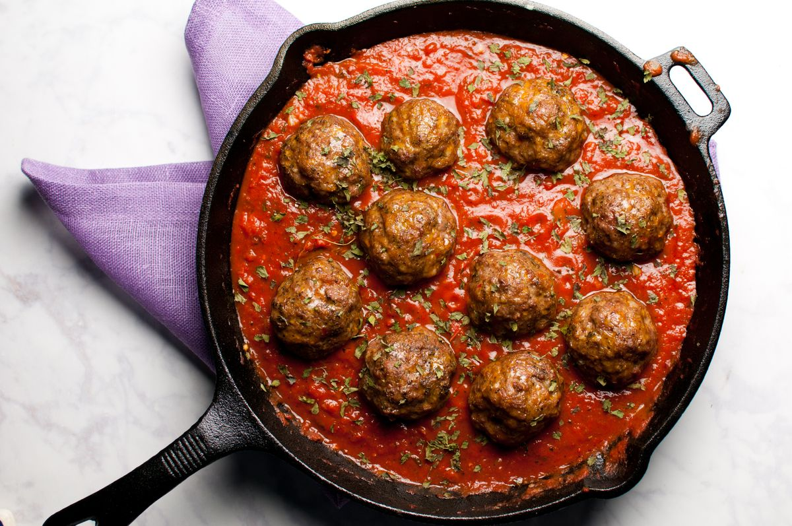

Meatballs Recipe

Descripton
A true Italian Classic. This recipe is good on top of pasta, or served with a side of fresh baguette.
Ingredients
- Ground Beef
- Panko
- Eggs
- Italian Seasoning
- Marinara Sauce
Steps
- First you are going to combine the eggs, ground beef, italian seasoning, and panko into a bowl.
- Combine until all ingredients are thoroughly mixed
- Shape into small balls
- Place into cast iron pan and top with marinara sauce
- Put into preheated oven and cook for 35 minutes
- Remove and eat hot
- Bon Appetit